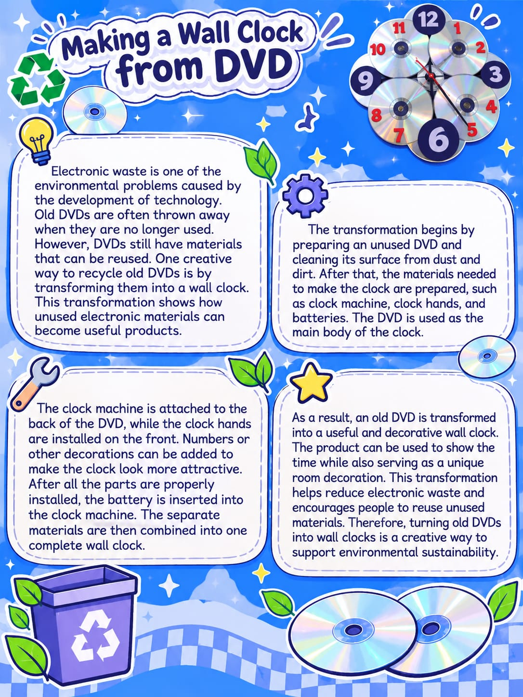

FIRST PROJECT
Making a Wall Clock from DVD

Puri Ayu Agustina
32
01 Introduction
Electronic waste is one of the environmental problems caused by the development of technology. Old DVDs are often thrown away when they are no longer used. However, DVDs still have materials that can be reused. One creative way to recycle old DVDs is by transforming them into a wall clock. This transformation shows how unused electronic materials can become useful products.
02 Preparation
The transformation begins by preparing an unused DVD and cleaning its surface from dust and dirt. After that, the materials needed to make the clock are prepared, such as a clock machine, clock hands, and batteries. The DVD is used as the main body of the clock.
03 Assembly Process
The clock machine is attached to the back of the DVD, while the clock hands are installed on the front. Numbers or other decorations can be added to make the clock look more attractive. After all the parts are properly installed, the battery is inserted into the clock machine. The separate materials are then combined into one complete wall clock.
04 Result
As a result, an old DVD is transformed into a useful and decorative wall clock. The product can be used to show the time while also serving as a unique room decoration. This transformation helps reduce electronic waste and encourages people to reuse unused materials. Therefore, turning old DVDs into wall clocks is a creative way to support environmental sustainability.